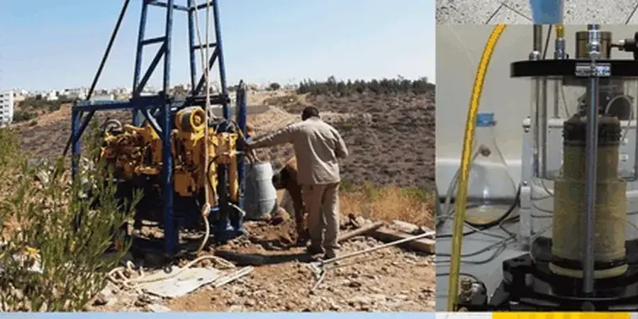

Our geotechnical services in Airdrie provide comprehensive site characterization, foundation design, subsurface investigation, and construction monitoring tailored to the region's unique geology. With a focus on code-compliant reports and calibrated equipment, we deliver reliable solutions for residential, commercial, and infrastructure projects. Our team coordinates closely with local contractors and authorities to ensure smooth project execution, from initial soil exploration through final compliance verification. Whether you need standard penetration testing or advanced soil mechanics analysis, we bring consolidated regional experience to every assignment.

Methodology applied in Airdrie
Working video
Risks and considerations in Airdrie
Our firm brings consolidated regional experience to Airdrie, with a track record of successful projects across the Calgary region. We operate a calibrated in-house laboratory for Atterberg limits, unconfined compression, and soil classification, ensuring rapid, accurate results. Our team maintains close coordination with Airdrie's planning department and local contractors to streamline permitting and construction. By adhering strictly to NBCC and ASTM standards, we deliver code-compliant reports that facilitate smooth approvals. This local expertise, combined with a commitment to transparent communication, makes us a trusted partner for geotechnical challenges in Airdrie.
Our services
Common questions
What are the typical soil conditions in Airdrie for residential foundations?
Airdrie's soils are predominantly glacial till, which generally provides good bearing capacity for shallow foundations. However, localized pockets of sand and gravel, as well as expansive clay zones, require careful site-specific investigation. The water table is usually deep, but seasonal changes near creeks can affect shallow excavations. We recommend standard penetration testing and Atterberg limitsanalysis to assess variability and ensure foundation designs account for potential differential settlement.
How does the local geology affect basement construction in Airdrie?
The dense glacial till in Airdrie typically offers stable excavation conditions, but the presence of cobbles and boulders can complicate digging. Expansive clay soils may cause heave if not properly managed, requiring appropriate moisture control and foundation drainage. Groundwater is generally not a major issue, but sump pumps and perimeter drains are still recommended as a precaution. A thorough subsurface investigation helps identify any problematic layers before construction begins.
What Canadian building code requirements apply to geotechnical work in Airdrie?
Projects in Airdrie must comply with the National Building Code of Canada (NBCC) 2020, which governs seismic design, foundation loads, and soil-bearing capacities. The Alberta Building Code adopts NBCC with minor amendments. Geotechnical reports must follow CSA A2500 standards, and field testing uses ASTM methods like D1586 for SPT. Local bylaws may also require additional reporting for sites near sensitive areas like Nose Creek.
Do I need a geotechnical report for a small home addition in Airdrie?
While not always mandatory, a geotechnical report is highly recommended for any addition that alters foundation loads. Airdrie's variable soil conditions—especially expansive clays or buried organic layers—can lead to unexpected settlement or heave if not identified early. A focused investigation, including a few boreholes and laboratory tests, provides peace of mind and helps avoid costly repairs. Many lenders and contractors also require such reports for insurance purposes.